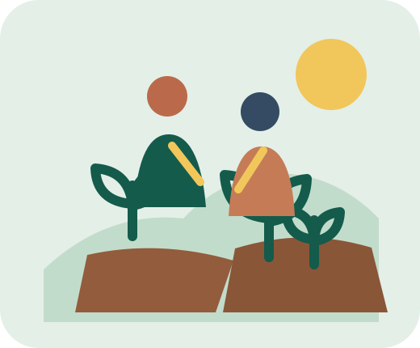

Educação
Aprender em conjunto
Compartilhe conhecimentos e incentive novas descobertas com crianças e jovens.
Ver como ajudarPequenas ações, grandes encontros
Encontre uma causa perto de casa, conheça quem já está fazendo a diferença e participe do seu jeito.
Encontrar uma causaSem experiência prévia. Só vontade de fazer parte.

Escolha por onde começar
Uma hora do seu tempo já pode abrir novas possibilidades.
Educação
Compartilhe conhecimentos e incentive novas descobertas com crianças e jovens.
Ver como ajudarSegurança alimentar
Apoie cozinhas comunitárias e redes locais de distribuição de alimentos.
Ver como ajudarMeio ambiente
Cuide de praças, hortas urbanas e espaços compartilhados do bairro.
Ver como ajudarJuntos, chegamos mais longe
Conectamos pessoas, organizações sociais e iniciativas locais para tornar a participação simples, próxima e transparente.
Uma rede que cresce com cada pessoa que participa.
Um passo de cada vez
Encontre uma iniciativa que combine com seus interesses e sua rotina.
Veja o que será feito, onde acontece e como você pode contribuir.
Comece com uma ação. A comunidade cresce com cada encontro.
Dê o próximo passo
Conte qual causa combina com você. Esta demonstração não envia nem guarda os dados informados.
Dúvidas frequentes
Não. Cada oportunidade informa o que será feito e se algum conhecimento específico é necessário.
As iniciativas têm durações diferentes. Escolha uma atividade que caiba na sua disponibilidade.
Não. Esta é uma demonstração acadêmica. Os campos mostram validação local e não enviam nem armazenam informações.